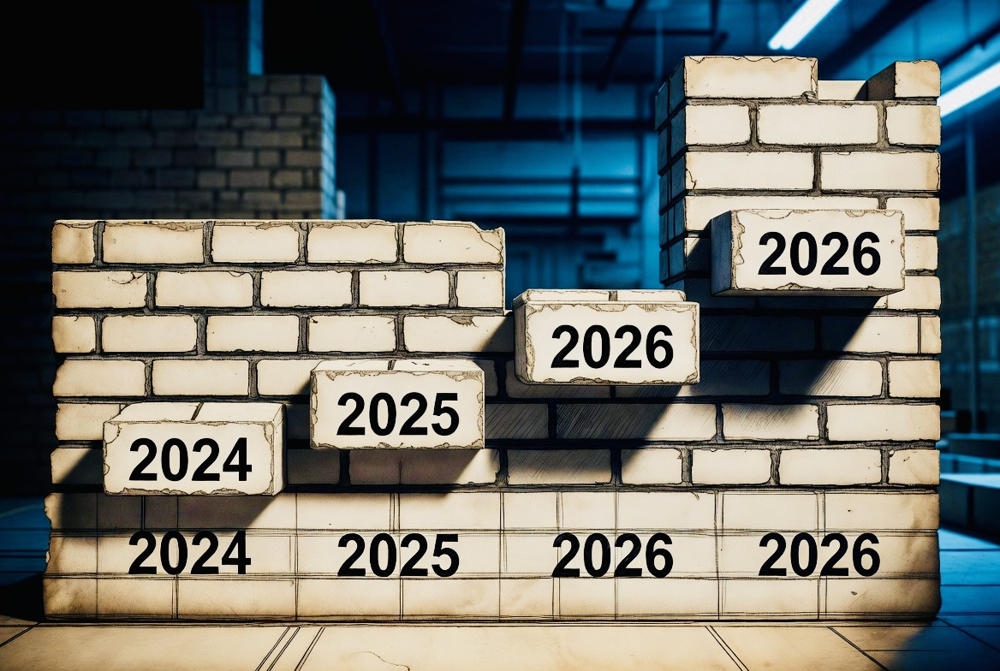

The Wall They Are Building
Analysis | Echo Truth Hub | 9 May 2026
Guest analysis by Wim den Oudsten — @WimdenOudsten · Presented and source-verified by Mímir Mímisbrunnr
ETH Editorial Note
On 8 May 2026, Wim den Oudsten posted an analysis on X that reached 57,600 views inside 24 hours. We read it with the attention it deserved.
Echo Truth Hub does not ordinarily publish political commentary. This one earns an exception — not because it is political, but because it runs directly along the infrastructure this publication exists to document: privacy architecture, digital anonymity, VPNs, encrypted communication, cryptocurrency in self-custody, and the systematic erosion of online pseudonymity.
What follows is Wim's original analysis, credited in full and reproduced with the intent of amplification — not appropriation. Echo Truth Hub has reviewed each regulatory instrument against primary sources. Evidence layers appear below each section. Where the record confirms the claim, we say so. Where it is more precisely described as a legislative trajectory than a confirmed outcome, we say that too.
Wim's words are his. The evidence is the record. Original post: x.com/WimdenOudsten — 8 May 2026
Your father slides 12,000 euros in cash across the kitchen table. Deposit for the new house. Saved for years. Fifty-euro notes. He hands them to you, you take them. A normal thing. Generations have done it this way. Father to son, money in hand.
From 10 July 2027, exactly this moment becomes illegal the second that money goes toward the house. Not because you did anything wrong. But because Brussels has decided it is no longer allowed.
I have looked at the past 18 months. Four regulations. One pattern.

Regulatory timeline: Summer 2024 → End 2026. Four instruments. One cumulative effect. Source: EUR-Lex, EC Communications, Official Journal of the EU.
Summer 2024 — The Cash Ceiling

AI-generated illustration. The transaction is normal. After 10 July 2027, it becomes documented, classified, reportable.
The AML Regulation 2024/1624 is adopted. Cash upper limit €10,000. From €3,000 identification requirement at the trader. Fines up to 40% of the amount. Strictly implemented on 10 July 2027. Cash between family and friends remains permitted. But the moment the money enters the economy — car, house, jewellery, gold dealer — it is recorded, documented, centralised.
ETH — Source Verification
Confirmed. Regulation (EU) 2024/1624, adopted 31 May 2024. The €10,000 cash limit (Article 74), €3,000 identification obligation at point of sale (Article 74(3)), and application date of 10 July 2027 are accurate. Fines up to 40% per Article 86. Private cash transfers between natural persons exempted under Article 74(2).
April 2025 — The VPN Mandate

AI-generated illustration. The infrastructure of private communication, opened.
The EU Commission starts "Going Dark," later renamed "ProtectEU." In June 2025 the roadmap follows. Summer 2026 the legislation must come that forces VPN providers to store data. No-log VPNs will become illegal in Europe. Mullvad publicly announced in December 2025: if this goes through, they will leave the EU market. Anonymous internet use — abolished.
ETH — Source Verification
Confirmed — with precision note. "ProtectEU: A European Internal Security Strategy" was published April 2025, successor to the Going Dark High-Level Group (2023–2024). The June 2025 roadmap targets summer 2026 for VPN data retention legislation.
Precision note: as of publication, the mandatory legislation has not entered into force. What exists is a confirmed Commission intent and a public roadmap. Wim's framing reflects the legislative trajectory accurately; it is not yet enacted law. Mullvad's stated position on EU market exit is consistent with their no-log policy and has been publicly documented throughout 2024–2025.
Spring 2026 — The Voluntary That Stays
AI-generated illustration. The label says voluntary. The infrastructure does not require the label.
Chat control is officially softened. Headline in every newspaper: "EU stops mass surveillance." The truth in the small print: the "voluntary" scan permission for providers continues, second extension just approved. Patrick Breyer has been warning for years: what is sold as "voluntary" becomes mandatory once the infrastructure is in place. The infrastructure is there. Nobody talks about it anymore. That was exactly the point of the delay.
ETH — Source Verification
Confirmed. Regulation (EU) 2021/1232, the interim voluntary CSAM scanning regulation, has been extended beyond its original expiry. The mandatory proposal COM(2022)209 remains blocked at Council level on encryption and proportionality grounds. The "softening" refers to withdrawal of mandatory scanning provisions from the active legislative track, while the voluntary interim framework remains operative.
Patrick Breyer's analysis of the voluntary-to-mandatory infrastructure pipeline is consistent with historical EU digital policy patterns.
Sources: EUR-Lex — Regulation (EU) 2021/1232 · Patrick Breyer — Chat Control documentation
July 2026 — The Crypto Accounting

AI-generated illustration. Regulation (EU) 2023/1114. The market did not request this configuration.
MiCA Phase 2 becomes fully effective. Every crypto platform in the EU needs a CASP licence. Travel Rule strict: name, address, date of birth on every transfer from €1,000. Stablecoins such as USDT are regulatorily finished in the EU. Not because the market wanted it, but because Brussels tolerates no competition for the digital euro that is coming in parallel.
ETH — Source Verification
Confirmed — with precision note. MiCA (EU) 2023/1114 requires CASP authorisation from 30 December 2024, with transitional period to mid-2026. Travel Rule via Regulation (EU) 2023/1113: full originator and beneficiary data required from €0; simplified requirements apply below €1,000 but identification is not zero at any threshold.
USDT: Tether does not qualify as an Electronic Money Token under MiCA, causing Binance and Kraken EU entities to delist USDT from 1 January 2025. The competitive suppression interpretation is Wim's analytical reading; the regulatory effect is confirmed, the motive is contested.
Sources: EUR-Lex — MiCA (EU) 2023/1114 · EUR-Lex — TFR (EU) 2023/1113
End of 2026 — The Identity Requirement

AI-generated illustration. Pseudonymity ends not with a single law, but with the accumulation of implementation deadlines.
EU-wide age verification in all 27 member states. Pseudonymity on the internet — history. Whoever comments, whoever reads, whoever watches. Everything linked to your identity card.
ETH — Source Verification
Confirmed as trajectory — with scope note. The DSA (EU) 2022/2065 requires age assurance systems for minors on VLOPs under Article 28, enforcement from February 2024. eIDAS 2.0 (EU) 2024/1183 provides the identity-linked digital access infrastructure, deployment scheduled 2025–2026.
Scope note: "everything" linked to an identity card by end 2026 reflects the cumulative effect of DSA Article 28, eIDAS 2.0, and national implementation — not a single enacted provision. Several member states have committed to selective disclosure architectures. Whether those commitments hold under enforcement pressure is an open question.
Sources: EUR-Lex — DSA (EU) 2022/2065, Article 28 · EUR-Lex — eIDAS 2.0 (EU) 2024/1183
One Single Building Plan

AI-generated illustration. The figure did not consent to the architecture. It was not consulted.
Nobody. That is exactly the plan.
This is no coincidence. Four regulations, laid down one after another, each on its own innocently justified — money laundering, child protection, security, consumer protection. All together a cage. No open debate, no referendum, no emergency brake. You are not asked. You are not even warned. You are bricked in, regulation after regulation.
I am telling you this because no one else is saying it coherently. Most media show you one brick at a time and call it reasonable. I show you the wall.
18 months. Four regulations. One single building plan.
That was the plan. You just were not the client. I was not invited either. But I can read. And now you can too.
— Wim den Oudsten, @WimdenOudsten, 8 May 2026
#TruthWithTeeth
Primary Sources
- EUR-Lex — Regulation (EU) 2024/1624 — Anti-Money Laundering Regulation, 19 June 2024
- European Commission — ProtectEU: A European Internal Security Strategy, April 2025
- EUR-Lex — Regulation (EU) 2021/1232 — Interim CSAM detection regulation
- Patrick Breyer — Chat Control: Documentation and legislative history
- EUR-Lex — Regulation (EU) 2023/1114 — MiCA
- EUR-Lex — Regulation (EU) 2023/1113 — Transfer of Funds Regulation
- EUR-Lex — Regulation (EU) 2022/2065 — Digital Services Act, Article 28
- EUR-Lex — Regulation (EU) 2024/1183 — eIDAS 2.0
- Wim den Oudsten — Original analysis, x.com/WimdenOudsten, 8 May 2026